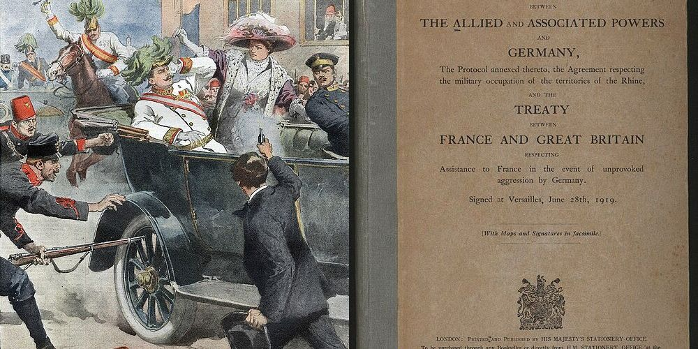

Meoncross School | History Department
Edition 2026.1
How did a single spark in Sarajevo ignite a global conflict that transformed the modern
world?
KS3: The Great War (1914-1919)
PROGRESS & ASSESSMENT TRACKER
Target Grade: _________
|
Level
|
Emerging (1-2) |
Emerging+ (3) |
Expected (4-5) |
Expected+ (6-7) / Greater Depth (8-9)
|
|
Lesson / Assessment Title
|
Effort
|
Level
|
Teacher Comments |
|
L1: Why were young men so desperate to join the slaughter of 1914?
|
|
|
|
|
L2: Did British generals make the horror of trench warfare worse?
|
|
|
|
|
L3: How much of a 'World' War was it, and why were the Empire's troops forgotten?
|
|
|
|
|
L4: How did a war fought miles away completely control daily life in Britain?
|
|
|
|
|
L5: Did the Treaty of Versailles solve the problems of 1914, or create the
nightmares of 1939?
|
|
|
|
|
L6: How did the "Lost Generation" impact the village of Stubbington?
|
|
|
|
|
L7: Assessment: The Great War (1914–1919)
|
|
|
|
|
Final Unit Grade:
|
|
|
|
L1: Why were young men so desperate to join the slaughter of 1914?
Learning Objectives
Explain how the BEF's small size compelled Britain to rely on voluntary recruitment and
Lord Kitchener’s New Armies.
Analyze how the "Pals Battalions" mobilized local communities like the Pompey Pals, and
evaluate their tragic vulnerability to industrial warfare.
Evaluate the historiographical debate between traditional "naive victim" interpretations
and revisionist arguments on moral duty (Pennell) and economic pragmatism (Sheffield).
Q1. Study Source A. How does this poster use emotional manipulation and gender
expectations to pressure men into volunteering?
Do Now Activity
Score: / 10
1. What military plan did Germany devise to knock France out within six weeks before
fighting Russia?
2. Which neutral country did Germany invade on 4 August 1914, compelling Britain to
declare war?
3. Which three nations formed the Triple Entente diplomatic coalition by 1907?
4. What revolutionary British battleship was launched in 1906, rendering older warships
obsolete?
5. What unconditional diplomatic pledge did Kaiser Wilhelm II give Austria-Hungary on 5
July 1914?
6. Who fired the fatal shots that assassinated Archduke Franz Ferdinand in Sarajevo on
28 June 1914?
7. What secret Serbian nationalist society supplied the assassins with weapons and
cyanide in 1914?
8. What German word describes the acute fear of being surrounded by hostile France and
Russia?
9. Which two provinces did France lose to Germany following the Franco-Prussian War in
1871?
10. What was Britain’s traditional 19th-century policy of avoiding peacetime European
alliances called?
Vocabulary Check
The Odd One Out: Select THREE terms that share a close historical
connection. Identify which ONE remaining term is the 'Odd One Out' in this lesson, and
explain your historical reasoning:
British Expeditionary Force | Lord Kitchener | Pals Battalions
| White Feather | Pragmatism | Jingoism
Q2. The Recruitment Domino: Trace how Britain’s lack of a conscript army transformed
into the largest voluntary mobilization in British history. Complete Step 4.Causal Chain
Using paragraphs [1.1] to [1.3], trace the chain reaction from the outbreak of war to
the rush to the recruiting offices, completing the missing causal explanation in Step 4.
Step 1: Vulnerability
4 August 1914
The Contemptible Little Army
Britain enters the war with only 120,000 professional soldiers (the BEF) and zero
conscription.
➜
Step 2: Strategy
5 August 1914
Kitchener’s Grand Prediction
Lord Kitchener warns the war will last years and demands an army of millions built
entirely from volunteers.
➜
Step 3: Mobilization
August 1914
The Propaganda Campaign
Iconic pointing-finger posters and moral outrage over the invasion of Belgium
trigger nationwide recruitment drives.
➜
Step 4: Stampede
September 1914
The Volunteer Rush
Over 750,000 men enlist within eight weeks, motivated by patriotism, adventure, and
economic pragmatism.
Explain why working-class young men viewed joining Kitchener’s army as both a
moral duty and a practical economic opportunity:
Q3. Priority Diamond: Rank the four pivotal factors driving voluntary recruitment
from most decisive (Top Driver #1) to least decisive (#4) for a working-class teenager
in 1914.Priority Diamond
Using paragraphs [1.3], [2.1], and [2.2], write factor letters (A–D) into the diamond
hierarchy, then justify your top choice.
A
Factor A: Pals Battalion Camaraderie — The promise to train, live, and fight
side-by-side with mates.
B
Factor B: Economic Pragmatism — Guaranteed wages ("the King’s Shilling"), hot
food, and boots escaping poverty.
C
Factor C: Moral Outrage over Belgium — Defending international law and outrage
over reported German atrocities.
D
Factor D: State Propaganda & Jingoism — Lord Kitchener’s pointing finger and
popular newspaper excitement.
Write factor letters (A, B, C, D) in the podium slots above, then justify #1:
Factor [ ] was the most decisive driver of enlistment because for a young
working-class man...
Q4. Forensic Scalpel: Interrogate Source B (Jessie Pope’s Poem). Extract the exact
phrase where Pope reduces industrial war into an athletic rugby match.Forensic Scalpel
“Who’s for the game, the biggest that’s played, / The red crashing game of a
fight? / Who’ll grip and tackle the job unafraid? / And who thinks he’d rather sit
tight?”
Underline in the source text above, then copy the exact 3–6 word "smoking gun" quote:
[ “ . . . . . . . . . . . . . . . . . . . . . . . . . . . . . . . . . . . . . .
. . . . ” ]
Why is this phrase decisive? Why did comparing trench combat to a "red
crashing game" make Pope’s poetry such effective recruitment propaganda while horrifying
soldiers who actually fought?
By comparing warfare to a "red crashing game", Pope made combat sound like a noble
sport because...
Q5. Forensic Ledger: Complete the balance sheet below auditing the negative domestic
pressures driving men away from home against the positive incentives attracting them
into the army.Forensic Ledger
Using paragraphs [1.3], [2.1], [3.1], and [3.2], audit the balance sheet below comparing
Push Factors against Pull Factors.
|
Push Factors (Domestic Pressure & Fear)
|
Pull Factors (Patriotism & Opportunity)
|
|
• Threat of the White Feather campaign and public shaming
|
• Camaraderie and excitement of joining Pals Battalions with friends
|
|
• Moral blackmail from posters like "Women of Britain Say GO!"
|
• Moral outrage over the invasion of neutral Belgium and defence of empire
|
|
• Grinding pre-war industrial poverty, low wages, and unemployment
|
• Guaranteed daily pay ("the King’s Shilling"), hot food, boots, and clothing
|
Q6. Explain why so many young British men volunteered to join the armed forces in
1914.
[12 marks • 15 mins]
Historian's Corner: The Myth of the Gullible Volunteer: Pennell vs The Traditional View
For decades, popular history portrayed the volunteers of 1914 as naive simpletons who were
tricked by lying propaganda posters and jingoistic poetry into throwing their lives away.
However, modern revisionist historian Catriona Pennell (A Kingdom United, 2012) argues that
British volunteers were rational actors who made sober decisions based on genuine moral
outrage over Germany’s invasion of Belgium. Alongside this, military historian Gary
Sheffield demonstrates that millions enlisted out of economic pragmatism, seeking stable
wages, clothing, and food during a time of widespread poverty.
Q7. Does the evidence of the "Pals Battalions" support the traditional view of naive
volunteers, or the revisionist view of rational community solidarity?
Assessment Practice: Explaining Causation & Enlistment (12 Marks)
Pair & Share Activity
Q8. Prompt: Look at the three main reasons young men enlisted in 1914: patriotic
adventure, peer pressure/guilt, and economic survival. Which factor do you think was the
most influential for an ordinary working-class teenager?
Think: Rank the three factors from most to least influential in your notes.
Q9. Explain why so many young British men volunteered to join the armed forces in
1914.
[12 marks • 15 mins]
PEE/PEEL Structure Strip & Hints:
-
Point 1: The powerful appeal of "Pals Battalions", allowing friends, workmates, and
sports teams to enlist and serve together (e.g. the Pompey Pals).
-
Point 2: Widespread moral outrage over the German invasion of neutral Belgium and a
sense of patriotic duty to defend the Empire.
-
Point 3: Economic pragmatism and pre-war poverty, where the army offered steady pay
("the King’s Shilling"), hot meals, and warm clothing.
-
Point 4: Psychological coercion and social peer pressure, including government
propaganda posters and the civilian White Feather campaign.
L2: Did British generals make the horror of trench warfare worse?
Learning Objectives
Explain how the Race to the Sea and defensive technologies established stalemate across
the Western Front.
Analyze the physical and psychological horrors of trench life and industrial weaponry.
Evaluate the historiographical debate surrounding General Haig and the Battle of the
Somme.
Q1. Study Source A. How does this aerial photograph reveal the defensive strength and
complex design of Western Front trench systems?
Do Now Activity
Score: / 10
1. What name was given to British WWI battalions formed of friends, neighbours, and work
colleagues who enlisted together in 1914?
2. Which British War Secretary launched the famous "Your Country Needs You" recruitment
poster with a pointing finger?
3. Which local Hampshire regiment battalions were known as the "Pompey Pals" and
suffered 457 casualties on 3 September 1916?
4. What symbolic item did civilian women hand to men out of uniform to publicly shame
them for not enlisting?
5. Which pro-war poet published "Who’s for the Game?", framing industrialized trench
combat as a sporting rugby match?
6. What military plan did Germany devise to rapidly defeat France through Belgium in six
weeks before facing Russia?
7. Which neutral country did Germany invade on 4 August 1914, triggering Britain’s entry
into the war?
8. Which revolutionary British battleship launched in 1906 triggered an intense
Anglo-German naval arms race?
9. Who assassinated Archduke Franz Ferdinand in Sarajevo on 28 June 1914, sparking the
July Crisis?
10. Which three major European powers formed the Triple Entente diplomatic alliance by
1907?
Vocabulary Check
The Golden Sentence: Choose TWO terms from the word bank. Write ONE
grammatically sophisticated, historically accurate sentence connecting them using a
causal conjunction (because, although, or consequently):
Stalemate | No Man's Land | Artillery | Attrition
| Trench Foot | Shell Shock | Field Marshal
Douglas Haig | Creeping Barrage
Q2. The Deadlock Domino: Trace how the collapse of the Schlieffen Plan transformed
open mobile warfare into a 400-mile static trench stalemate. Complete Step 4.Causal Chain
Using paragraphs [1.1] to [1.3], trace the chain reaction leading to the creation of the
Western Front trench network, completing the missing causal explanation in Step 4.
Step 1: Strategic Failure
September 1914
The Battle of the Marne
The German advance on Paris is halted at the Marne, ending hopes of a quick six-week
victory.
➜
Step 2: Maneuver Exhaustion
Oct–Nov 1914
The Race to the Sea
Both armies attempt to outflank each other northward until hitting the North Sea
coast at Ypres.
➜
Step 3: Industrial Firepower
Late 1914
Defensive Weapon Dominance
Rapid-fire machine guns and heavy artillery make open-field infantry attacks
suicidal.
➜
Step 4: Subterranean Deadlock
Winter 1914
The 400-Mile Trench Network
Both armies dig continuous zig-zag trenches from the North Sea to Switzerland to
survive lethal firepower.
Explain why armies were forced to dig continuous subterranean trenches instead of
fighting in the open:
Q3. Priority Diamond: Rank the four pivotal hazards of trench warfare from most
lethal/destructive (Top Peril #1) to least destructive (#4) for an infantry soldier on
the front line.Priority Diamond
Using paragraphs [2.1] to [2.3], write factor letters (A–D) into the diamond hierarchy,
then justify your top choice.
A
Factor A: Heavy Artillery Bombardments — Inflicting ~60% of all combat
casualties, burying men alive, and causing shell shock.
B
Factor B: Rapid-Fire Machine Guns — Vickers and Maxim guns firing 500 rounds/min,
sweeping open ground.
C
Factor C: Chemical Warfare (Gas) — Chlorine, phosgene, and mustard gas causing
blindness, blistering, and suffocating lung rot.
D
Factor D: Filth, Disease & Trench Foot — Relentless mud, gangrenous foot
infections, corpse rats, and lice-borne fever.
Write factor letters (A, B, C, D) in the podium slots above, then justify #1:
Factor [ ] was the most devastating hazard of the Western Front because...
Q4. Forensic Scalpel: Interrogate Source B (Haig’s Official Dispatch). Extract the
exact phrase where Haig justifies the catastrophic casualties as a necessary process
of exhausting the German military.Forensic Scalpel
“The object of that offensive was threefold: to relieve the pressure on Verdun, to
prevent the transfer of German troops to other fronts, and to wear down the strength of
the enemy forces. These three main objectives have been very largely achieved... and his
losses have been considerably greater than our own.”
Underline in the source text above, then copy the exact 3–6 word "smoking gun" quote:
[ “ . . . . . . . . . . . . . . . . . . . . . . . . . . . . . . . . . . . . . .
. . . . ” ]
Why is this phrase decisive? Why did Haig’s claim that German losses
were "considerably greater than our own" cause intense outrage when compared to the
reality of the Somme?
Haig’s assertion that German losses were "considerably greater than our own" caused
intense controversy because...
Q5. Forensic Ledger: Complete the balance sheet below auditing the historical
indictment against General Haig against the historical defense offered by modern
revisionist historians.Forensic Ledger
Using paragraphs [3.1], [3.2], [3.3], and [4.2], audit the balance sheet below comparing
the prosecution case against the defense case.
|
The "Butcher" Thesis (Criticism & Incompetence)
|
The "Learning Curve" Thesis (Defense & Adaptation)
|
|
• 57,470 casualties on Day 1 of the Somme; ordering men to walk in slow lines
|
• Relieved French army at Verdun, preventing French collapse in 1916
|
|
• Rigid reliance on a flawed 7-day artillery bombardment that failed to cut wire
|
• Pioneered revolutionary combat technologies, including tanks and creeping
barrages
|
|
• Prolonging the bloody offensive for 5 months with 420,000 total British
casualties
|
• Modernized combined-arms doctrine to spearhead the victorious Hundred Days
Offensive (1918)
|
Q6. "British generals made the horror of trench warfare worse through outdated tactics
and callous incompetence." How far do you agree with this view of General Douglas Haig
and the Western Front?
[16 marks • 20 mins]
Historian's Corner: The Haig Debate: Alan Clark vs Gary Sheffield
In his 1961 book "The Donkeys", historian and politician Alan Clark popularized the argument
that brave British troops were commanded by foolish, arrogant, and out-of-touch aristocrats
who squandered an entire generation in senseless frontal assaults. However, modern
revisionist historian Professor Gary Sheffield ("The Chief: Douglas Haig and the British
Army", 2011) fundamentally challenges this caricature. Sheffield demonstrates that Haig
confronted the world’s first industrial war with zero technological template. Instead of
repeating failures, Haig mastered tanks, creeping barrages, aerial photography, and
sound-ranging artillery, leading the British Army to smash the German military in the
decisive Hundred Days Offensive of 1918.
Q7. Why did 1960s public culture embrace Alan Clark’s "Donkeys" thesis so eagerly, and why
have academic historians largely rejected it?
Assessment Practice: Evaluating Historical Interpretations of General Haig (16 Marks)
Pair & Share Activity
Q8. Prompt: Consider the traditional view ("Lions led by Donkeys") versus the modern
revisionist view (Haig climbed a steep "learning curve"). Do you believe British generals
deserve primary blame for the slaughter of the Western Front, or were they victims of
unprecedented industrial technology?
Think: Note down two pieces of evidence supporting the "Donkeys" view, and two pieces
supporting the "Learning Curve" view.
Q9. "British generals made the horror of trench warfare worse through outdated tactics
and callous incompetence." How far do you agree with this view of General Douglas Haig and
the Western Front?
[16 marks • 20 mins]
PEE/PEEL Structure Strip & Hints:
-
Point 1 (In Support): The catastrophic slaughter on Day 1 of the Somme (1 July
1916)—57,470 British casualties caused by Haig ordering troops to walk slowly in neat
rows carrying 30kg packs, misplaced faith in a flawed week-long artillery bombardment.
-
Point 2 (In Support): The distance between high command and the front line ("Château
Generals"), where aristocratic commanders failed to grasp the impenetrable strength of
German concrete dugouts and barbed wire (the "Lions led by Donkeys" thesis).
-
Point 3 (Against the View / Context): The unprecedented technological vacuum—defensive
weapons (Vickers and Maxim machine guns, heavy artillery) completely dominated offensive
movement, while communications relied on primitive runners and pigeons because portable
radios did not yet exist.
-
Point 4 (Against the View / The Learning Curve): Haig’s pragmatic adaptation and
modernization—pioneering the world's first combat tanks at Flers-Courcelette (1916),
mastering creeping artillery barrages, aerial photo reconnaissance, and coordinating the
Hundred Days Offensive to win the war in 1918 (Gary Sheffield / John Terraine thesis).
L3: How much of a 'World' War was it, and why were the Empire's troops forgotten?
Learning Objectives
Analyze the vital military intervention of the Indian Army in autumn 1914 and evaluate the
significance of Sepoy Khudadad Khan VC.
Examine the logistical labor and racial discrimination experienced by the BWIR and Chinese
Labour Corps.
Evaluate the historical debate surrounding imperial memory (Olusoga and Das) and analyze
why colonial troops were marginalized.
Q1. Study Source A. How does the heroism of Sepoy Khudadad Khan demonstrate the vital
military role of the Indian Army in saving the British line in 1914?
Do Now Activity
Score: / 10
1. What debilitating fungal and circulatory medical condition was caused by standing in
cold, waterlogged mud in the trenches?
2. Which weapon was responsible for approximately 60% of all combat casualties on the
Western Front?
3. How many British casualties were suffered on the disastrous first day of the Battle
of the Somme (1 July 1916)?
4. Why were frontline trenches constructed in an intricate zig-zag or traverse pattern
rather than straight lines?
5. What popular phrase was coined to criticize British generals for leading brave
soldiers into suicidal frontal assaults?
6. Which British Secretary of State for War launched the famous "Your Country Needs You"
pointing-finger recruitment poster in 1914?
7. What name was given to units formed of workmates, neighbours, and sports teammates
who enlisted together in 1914?
8. Which Hampshire regiment battalions were known as the "Pompey Pals" and suffered 457
casualties on 3 September 1916?
9. What symbolic item was handed to civilian men in public by women to shame them into
enlisting?
10. Which civilian poet published "Who’s for the Game?", framing industrialized trench
slaughter as an athletic rugby match?
Vocabulary Check
Conceptual Classification: Categorise the terms from the word bank
into the two historical boxes below:
British Empire | Sepoy | Victoria Cross | Chinese
Labour Corps | British West Indies Regiment | Royal Pavilion,
Brighton | Imperial Censorship | Self-Determination
Power, Governance & Warfare
Q2. The Imperial Lifeline: Trace how the near-destruction of Britain’s professional
army compelled the deployment of over 1.3 million Indian troops to the Western Front.
Complete Step 4.Causal Chain
Using paragraphs [1.1] to [1.3], trace the causal chain reaction from the August 1914
crisis to the arrival of the Indian Corps, completing the missing explanation in Step 4.
Step 1: Outbreak of Global War
August 1914
Imperial Mobilization
Britain commits over 400 million colonial subjects across five continents without
democratic consultation.
➜
Step 2: Military Emergency
September 1914
The Shattering of the BEF
The British regular army suffers catastrophic losses at Mons and the Marne, leaving
front lines defenseless.
➜
Step 3: The Ocean Convoy
October 1914
The Indian Corps Arrives
28,500 Indian soldiers land at Marseilles and are rushed immediately to the freezing
trenches of Flanders.
➜
Step 4: Holding the Line
Nov 1914
Saving the Channel Ports
Indian soldiers hold one-third of the frontline at First Ypres, preventing Allied
collapse.
Explain how the Indian Army saved the British war effort from catastrophic
collapse in autumn 1914:
Q3. Priority Diamond: Rank the four pivotal contributions of imperial and colonial
personnel from most decisive (#1) to least decisive (#4) in sustaining the British war
effort.Priority Diamond
Using paragraphs [1.2], [1.3], [2.1], and [2.2], write factor letters (A–D) into the
diamond hierarchy, then justify your top choice.
A
Factor A: Indian Army Combat Divisions — 130,000 troops plugging vital frontline
gaps at First Ypres and Neuve Chapelle.
B
Factor B: Chinese Labour Corps Logistics — 140,000 workers handling artillery
ammunition, railways, and ordnance disposal.
C
Factor C: British West Indies Regiment Labour — 16,000 Caribbean volunteers
loading heavy artillery batteries under shellfire.
D
Factor D: Imperial Raw Materials & Finance — Vast shipments of food, cotton,
rubber, oil, and £100m+ in Indian financial loans.
Write factor letters (A, B, C, D) in the podium slots above, then justify #1:
Factor [ ] was the most decisive imperial contribution because...
Q4. Forensic Scalpel: Interrogate Source B (The Intercepted Sepoy Letter). Extract
the exact phrase where the soldier defines the conflict not as an ordinary war, but as
cosmic destruction.Forensic Scalpel
“This is not a war, it is the ending of the world. It is not war, it is a
continuous raining of fire and iron. Men are blown to pieces like chaff in the wind...
We are like sheep driven into a slaughterhouse.”
Underline in the source text above, then copy the exact 3–6 word "smoking gun" quote:
[ “ . . . . . . . . . . . . . . . . . . . . . . . . . . . . . . . . . . . . . .
. . . . ” ]
Why is this phrase decisive? Why did British military censors
systematically confiscate letters containing phrases like "This is not a war, it is the
ending of the world"?
British imperial censors confiscated this letter because the phrase "This is not a
war, it is the ending of the world"...
Q5. Forensic Ledger: Complete the balance sheet below auditing the official British
propaganda narrative regarding colonial troops against the harsh realities revealed by
primary archives.Forensic Ledger
Using paragraphs [2.2], [2.3], [3.1], and [3.2], audit the balance sheet below comparing
official propaganda against the historical reality.
|
Public Imperial Propaganda (The "Benevolent" Empire)
|
Suppressed Colonial Reality (Segregation & Control)
|
|
• Lavish medical care in Brighton Pavilion with dedicated religious diets
|
• Strict racial segregation, barbed wire enclosures, and lower military wages
|
|
• Postcards showing happy colonial soldiers fighting loyally for King-Emperor
|
• Banning Black soldiers from combat; restricting them to hazardous manual
labour
|
|
• Framing the British Empire as an equal, harmonious family of nations
|
• Ruthless mail censorship and complete exclusion from the 1919 London Victory
Parade
|
Q6. Explain why the contributions of imperial and colonial personnel were marginalized
in British memory of the First World War.
[12 marks • 15 mins]
Historian's Corner: Imperial Amnesia: David Olusoga vs Santanu Das
In his landmark book and BBC documentary "The World's War" (2014), historian Professor David
Olusoga argues that the First World War was not a European clash of nations, but a clash of
multi-ethnic global empires that could not have been fought—let alone won—without four
million non-white combatants and labourers. Alongside this, cultural historian Professor
Santanu Das ("India, Empire, and First World War Culture", 2018) explores the deeply
personal, sensory trauma preserved in the intercepted letters and folk songs of colonial
troops, demonstrating that the psychological trauma of the trenches was shared across
imperial lines, yet systematically erased from European memorialization.
Q7. Why was the concept of the First World War as a "White Man’s War" so vital to European
colonial empires in 1919?
Assessment Practice: Explaining Causation & Historical Marginalization (12 Marks)
Pair & Share Activity
Q8. Prompt: Consider why the British government heavily publicized the luxurious treatment
of wounded Indian soldiers at Brighton Pavilion, yet ruthlessly censored their letters
home and excluded Black troops from the 1919 Victory Parade. Was British imperial policy
driven primarily by military gratitude or political fear?
Think: List one piece of evidence showing British appreciation, and one piece of evidence
showing racial fear/control.
Q9. Explain why the contributions of imperial and colonial personnel were marginalized in
British memory of the First World War.
[12 marks • 15 mins]
PEE/PEEL Structure Strip & Hints:
-
Point 1: Institutional racism and racial hierarchy in the British military—Black and
Asian troops were largely restricted to non-combat labour (e.g. BWIR and CLC), excluded
from officer ranks, and barred from the official London Victory Parade of July 1919.
-
Point 2: Post-war Eurocentric commemoration and literature—memorials (like the
Cenotaph), poetry (Wilfred Owen, Siegfried Sassoon), and cultural plays focused almost
exclusively on white British soldiers in the trenches of France.
-
Point 3: Imperial anxiety and the rise of anti-colonial independence movements—the
British government actively suppressed colonial military records to avoid conceding
political self-determination and democracy to India, Africa, and the Caribbean.
-
Point 4: Wartime censorship and colonial suppression—intercepted letters (such as those
from Brighton Pavilion) and the suppression of the 1918 Taranto Mutiny ensured that
colonial discontent never reached the British public.
L4: How did a war fought miles away completely control daily life in Britain?
Learning Objectives
Explain how DORA and the German submarine blockade expanded the power of the state over
civilian habits and food supplies.
Analyze the conscription crisis of 1916 and the treatment of Conscientious Objectors.
Evaluate the historiographical debate on whether the war liberated British women or
exploited them.
Q1. Study Source A. How does this photograph demonstrate the radical transformation of
women’s roles in British society during the First World War?
Do Now Activity
Score: / 10
1. Who became the first South Asian recipient of the Victoria Cross for his heroic
machine-gun defense at First Ypres in 1914?
2. Which royal palace in southern England was converted into a specialized military
hospital for wounded Indian soldiers?
3. What manual tasks were volunteers of the British West Indies Regiment (BWIR)
restricted to due to racial discrimination?
4. Approximately how many Chinese civilian workers served on the Western Front in the
Chinese Labour Corps (CLC)?
5. What major event in July 1919 saw Black colonial troops deliberately barred from
marching through London?
6. What debilitating fungal and circulatory infection was caused by prolonged standing
in freezing waterlogged mud?
7. Which weapon caused approximately 60% of all battlefield casualties on the Western
Front?
8. How many British casualties occurred on the first day of the Battle of the Somme (1
July 1916)?
9. Why were frontline trenches dug in sharp zig-zag traverses rather than straight
lines?
10. What historical phrase was used to criticize aristocratic British generals for
sacrificing brave infantrymen in frontal assaults?
Vocabulary Check
Spot the Deliberate Error: Read the statement below. One historical
fact or vocabulary concept has been deliberately falsified. Underline the error and
explain the accurate historical reality below:
Home Front | DORA | Conscription | Conscientious
Objector | Munitionettes | Canary Girls |
Compulsory Rationing | Representation of the People Act
Challenge: Write ONE statement containing a deliberate historical
misconception using Home Front or DORA. Swap with a
partner to identify and correct the error:
Q2. The Total War Domino: Trace how the outbreak of industrial warfare forced the
British government to abandon Victorian freedom and establish total control over
civilian daily life. Complete Step 4.Causal Chain
Using paragraphs [1.1] to [1.3], trace the chain reaction leading to the creation of the
wartime state under DORA, completing the missing explanation in Step 4.
Step 1: Total War Emergency
August 1914
The Outbreak of War
Britain enters a modern industrial war demanding millions of shells and complete
economic mobilization.
➜
Step 2: Emergency Legislation
8 August 1914
Passing of DORA
Parliament passes DORA without debate, granting the government power to bypass civil
courts and rule by decree.
➜
Step 3: Industrial Nationalization
1914–1915
Seizing the Economy
The state takes over coal mines, railways, and factories to ensure uninterrupted
munitions supply.
➜
Step 4: Regulating the Citizen
1915–1916
Controlling Daily Life
Pub hours are slashed, beer is watered down, clocks are changed, and free speech is
criminalized.
Explain why the British government believed it was necessary to control personal
habits like drinking, pub hours, and free speech during wartime:
Q3. Priority Diamond: Rank the four pivotal intrusions of the British state into
civilian freedom from most severe/oppressive (#1) to least oppressive (#4).Priority Diamond
Using paragraphs [1.1], [1.3], [2.1], and [2.3], write factor letters (A–D) into the
diamond hierarchy, then justify your top choice.
A
Factor A: Compulsory Military Conscription — Forcing citizens by law to kill or
risk death on the battlefield.
B
Factor B: Imprisonment of Conscientious Objectors — Penal servitude, death
sentences, and disenfranchisement for moral beliefs.
C
Factor C: Censorship of the Press and Speech — Criminalizing anti-war criticism
and intercepting private letters under DORA.
D
Factor D: Social & Economic Regulation — Pub curfews, watered beer, daylight
saving, and seizure of private factories.
Write factor letters (A, B, C, D) in the podium slots above, then justify #1:
Factor [ ] was the most extreme encroachment on civilian freedom because...
Q4. Forensic Scalpel: Interrogate Source B (The DORA Legislation). Extract the exact
phrase where the government makes it a criminal offence to criticize the war or spread
negative news.Forensic Scalpel
“No person shall by word of mouth or in writing spread reports or make statements
likely to cause disaffection or alarm among His Majesty’s forces or among the civilian
population... and require the extinction or obscuration of lights in any area.”
Underline in the source text above, then copy the exact 3–6 word "smoking gun" quote:
[ “ . . . . . . . . . . . . . . . . . . . . . . . . . . . . . . . . . . . . . .
. . . . ” ]
Why is this phrase decisive? Why was criminalizing speech "likely to
cause disaffection or alarm" such a radical departure from British democratic tradition?
Criminalizing speech "likely to cause disaffection or alarm" was a radical departure
because...
Q5. Forensic Ledger: Complete the balance sheet below auditing the historical
evidence that the war liberated British women against the evidence that it exploited
them in hazardous conditions.Forensic Ledger
Using paragraphs [3.1], [3.2], [3.3], and [4.2], audit the balance sheet below comparing
the liberation argument against the exploitation argument.
|
Evidence for Liberation & Social Advancement
|
Evidence for Exploitation & Temporary Illusion
|
|
• Substantial independent wages three times higher than domestic service
|
• 12-hour grueling shifts, toxic TNT poisoning ("Canary Girls"), and fatal
explosions
|
|
• Operating heavy engineering machinery, proving competence in male roles
|
• Significant wage inequality: paid ~50% less than male workers for identical
tasks
|
|
• Greater social autonomy: unchaperoned leisure, wearing trousers, smoking in
public
|
• Ruthlessly dismissed in 1919 under the Restoration of Pre-War Practices Act
|
Q6. Explain why the First World War had such a significant impact on British civilian
life between 1914 and 1918.
[12 marks • 15 mins]
Historian's Corner: Did the War Liberate Women? Martin Pugh vs Gail Braybon
For decades, traditional history textbooks claimed that the First World War was the great
liberator of British women, arguing that their heroic service as "Munitionettes" persuaded
male politicians to grant them the vote in 1918. However, feminist historian Gail Braybon
("Women Workers in the First World War", 1981) and political historian Professor Martin Pugh
("The March of the Women", 2000) heavily challenge this orthodox narrative. Braybon proves
that women endured brutal exploitation, toxic chemical poisoning, and unequal wages, only to
be ruthlessly sacked and forced back into domestic servitude under the 1919 Restoration of
Pre-War Practices Act. Furthermore, Pugh highlights that the 1918 Act enfranchised
respectable, married women over 30—the exact demographic that did not work in munitions
factories—while young working-class female workers remained entirely disenfranchised.
Q7. Why did the British Parliament grant the vote to women over 30 in 1918, while refusing
to give the vote to the young women who actually worked in the munitions factories?
Assessment Practice: Explaining Causation & Social Transformation (12 Marks)
Pair & Share Activity
Q8. Prompt: Consider the impact of the First World War on British women. Did working in
munitions factories genuinely "liberate" women, or were they merely exploited during an
emergency and forced back into domestic subordination in 1919?
Think: Identify two pieces of evidence supporting "liberation" (wages, independence, the
vote) and two supporting "exploitation" (TNT poisoning, pay inequality, post-war job
losses).
Q9. Explain why the First World War had such a significant impact on British civilian
life between 1914 and 1918.
[12 marks • 15 mins]
PEE/PEEL Structure Strip & Hints:
-
Point 1: Massive expansion of state power through DORA (August 1914)—the government
controlled railways, coal mines, pub opening hours, watered down beer, introduced
British Summer Time, and heavily censored the press.
-
Point 2: The introduction of compulsory military conscription (Military Service Act,
January 1916)—forcing civilian men aged 18–41 to fight, and the brutal persecution and
imprisonment of Conscientious Objectors.
-
Point 3: Total mobilization of women in the workforce ("Munitionettes" and Canary
Girls)—over one million women entered factories, risking TNT poisoning and industrial
explosions to solve the Shell Scandal.
-
Point 4: Food shortages, the German U-boat blockade, and compulsory rationing
(1917–1918)—compulsory rationing of sugar, butter, meat, and tea transformed daily
domestic survival for ordinary families.
L5: Did the Treaty of Versailles solve the problems of 1914, or create the nightmares of 1939?
Learning Objectives
Contrast the conflicting diplomatic agendas of Clemenceau, Lloyd George, and Woodrow
Wilson at Paris.
Analyze the punitive terms imposed on Germany (GARGLE) and the German reaction to the
"Diktat".
Evaluate the historical interpretations of Keynes and MacMillan regarding whether
Versailles caused World War II.
Q1. Study Source A. How does Will Dyson use symbolism to predict that the Treaty of
Versailles would cause a second world war?
Do Now Activity
Score: / 10
1. What emergency legislation passed on 8 August 1914 gave the British government
sweeping control over civilian daily life?
2. What nickname was given to female munitions workers whose skin turned bright yellow
from toxic TNT chemical poisoning?
3. What 1916 legislation introduced compulsory military conscription for the first time
in modern British history?
4. What term describes individuals who refused to fight in the military on moral,
religious, or political grounds?
5. Which women were granted the right to vote in Britain under the 1918 Representation
of the People Act?
6. Who was the first South Asian soldier awarded the Victoria Cross for machine-gun
gallantry at First Ypres in 1914?
7. Which royal palace in England was converted into a specialized military hospital for
wounded Indian soldiers?
8. What unit of over 16,000 Caribbean volunteers was restricted to dangerous manual
labour due to British military racism?
9. How many Chinese civilian labourers served in the Chinese Labour Corps on the Western
Front handling heavy munitions?
10. What major celebration in London on 19 July 1919 deliberately barred Black colonial
troops from marching down Whitehall?
Vocabulary Check
The Odd One Out: Select THREE terms that share a close historical
connection. Identify which ONE remaining term is the 'Odd One Out' in this lesson, and
explain your historical reasoning:
The Big Three | Georges Clemenceau | Woodrow Wilson
| Diktat | Article 231 | Reparations |
Demilitarized Zone | League of Nations
Q2. The Peace Domino: Trace how the competing motives of the victorious Allies
resulted in the deeply flawed compromise of the Treaty of Versailles. Complete Step
4.Causal Chain
Using paragraphs [1.1] to [1.3], trace the chain reaction from the 1918 Armistice to the
Versailles compromise, completing the missing explanation in Step 4.
Step 1: The Armistice
11 Nov 1918
The German Surrender
Germany signs the armistice believing peace will be based on Woodrow Wilson’s fair
Fourteen Points.
➜
Step 2: Allied Gathering
January 1919
The Paris Conference
Delegates from 32 nations meet at Versailles; Germany and Russia are barred from
attending.
➜
Step 3: The Big Three Clash
Spring 1919
Irreconcilable Agendas
Clemenceau’s demand for revenge clashes with Wilson’s idealism and Lloyd George’s
trade pragmatism.
➜
Step 4: The Flawed Compromise
June 1919
The Unstable Settlement
The resulting treaty pleases nobody: harsh enough to enrage Germany, but too weak to
destroy it.
Explain why the conflicting goals of Clemenceau, Wilson, and Lloyd George made a
stable and lasting peace impossible to achieve:
Q3. Priority Diamond: Rank the four pivotal clauses of the Treaty of Versailles from
most politically/economically destabilizing (#1) to least destabilizing (#4) for
post-war German democracy.Priority Diamond
Using paragraphs [2.1] to [2.3], write factor letters (A–D) into the diamond hierarchy,
then justify your top choice.
A
Factor A: Article 231 (The War Guilt Clause) — National psychological humiliation
and the pretext for the "stab-in-the-back" myth.
B
Factor B: Financial Reparations (£6.6 Billion) — Astronomical debt leading
directly to the 1923 Ruhr crisis and hyperinflation.
C
Factor C: Territorial Losses & The Polish Corridor — Splitting East Prussia,
losing 13% of land, and 6 million German citizens.
D
Factor D: Severe Military Reductions — Army capped at 100,000, no air force,
Rhineland demilitarized, leaving Germany defenseless.
Write factor letters (A, B, C, D) in the podium slots above, then justify #1:
Factor [ ] was the most destabilizing clause of the Treaty of Versailles
because...
Q4. Forensic Scalpel: Interrogate Source B (The War Guilt Clause). Extract the exact
phrase where Germany is legally compelled to accept total blame for the destruction of
the war.Forensic Scalpel
“The Allied and Associated Governments affirm and Germany accepts the
responsibility of Germany and her allies for causing all the loss and damage to which
the Allied and Associated Governments and their nationals have been subjected as a
consequence of the war imposed upon them by the aggression of Germany and her
allies.”
Underline in the source text above, then copy the exact 3–6 word "smoking gun" quote:
[ “ . . . . . . . . . . . . . . . . . . . . . . . . . . . . . . . . . . . . . .
. . . . ” ]
Why is this phrase decisive? Why did forcing Germany to "accept
responsibility... for causing all the loss and damage" make reconciliation between
Germany and the Allies impossible?
Forcing Germany to "accept responsibility... for causing all the loss and damage"
made reconciliation impossible because...
Q5. Forensic Ledger: Complete the balance sheet below auditing the historical
argument that Versailles was a justified, necessary settlement against the argument
that it was a destructive, vindictive catastrophe.Forensic Ledger
Using paragraphs [1.2], [2.2], [3.2], and [4.2], audit the balance sheet below comparing
the prosecution case against the defense case.
|
Arguments for Justified Retribution (Clemenceau’s Defense)
|
Arguments for Catastrophic Injustice (Keynes’ Indictment)
|
|
• Germany devastated northern French towns, flooded coal mines, and caused 1.4m
French deaths
|
• Article 231 unfairly forced sole moral blame onto a new, struggling democratic
republic
|
|
• Germany imposed the far harsher Treaty of Brest-Litovsk on Russia in 1918,
seizing 1/3 of its land
|
• Astronomical reparations (£6.6bn) caused hyperinflation and destroyed Central
European trade
|
|
• Germany emerged with its industrial heartland undamaged and surrounded by
small, weak states
|
• The Polish Corridor split East Prussia, creating revanchist grievances that
Hitler exploited
|
Q6. Explain why the Treaty of Versailles caused such intense anger and political
instability in Germany between 1919 and 1923.
[12 marks • 15 mins]
Historian's Corner: The Versailles Debate: John Maynard Keynes vs Margaret MacMillan
In his bestselling 1919 book "The Economic Consequences of the Peace", British economist
John Maynard Keynes argued that the Treaty of Versailles was an immoral and catastrophic
"Carthaginian Peace" that deliberately impoverished Germany, ruined the European economy,
and made a second world war inevitable. However, modern revisionist historian Professor
Margaret MacMillan ("Peacemakers: Six Months That Changed the World", 2001) fundamentally
challenges Keynes’ thesis. MacMillan argues that Versailles was not uniquely harsh: Germany
remained the largest, most populous, and most industrially potent power in Central Europe,
with its territory undamaged by war. MacMillan contends that the rise of Hitler was not
caused by the treaty itself, but by the devastating 1929 Wall Street Crash and the refusal
of Britain and France to enforce the treaty’s military terms during the 1930s.
Q7. Does the evidence of Germany’s rapid rearmament in the 1930s support Keynes’ view that
Germany was economically crippled, or MacMillan’s view that German industrial power survived
intact?
Assessment Practice: Explaining Causation & Geopolitical Instability (12 Marks)
Pair & Share Activity
Q8. Prompt: Consider the dilemma faced by the Big Three in 1919. If you were French Prime
Minister Georges Clemenceau, whose country had suffered 1.4 million dead and total
devastation of its northern towns, would you have demanded any less than total German
disarmament and reparations? Was Clemenceau being vindictive, or was he acting rationally
to protect French national survival?
Think: Note down two arguments defending Clemenceau’s harsh demands, and two arguments
warning against the dangers of punishing Germany too severely.
Q9. Explain why the Treaty of Versailles caused such intense anger and political
instability in Germany between 1919 and 1923.
[12 marks • 15 mins]
PEE/PEEL Structure Strip & Hints:
-
Point 1: National humiliation and the "Diktat"—Germany was excluded from negotiations,
threatened with Allied invasion if it did not sign, and forced to accept sole moral
blame under Article 231 ("The War Guilt Clause").
-
Point 2: Economic devastation and catastrophic reparations—the astronomical bill of £6.6
billion ($33 billion) fixed in 1921 stripped Germany of vital industrial wealth,
contributing directly to the 1923 French occupation of the Ruhr and hyperinflation.
-
Point 3: Severe territorial losses and border fragmentation—losing 13% of European land,
including Alsace-Lorraine, the Saar coalfields, and the creation of the Polish Corridor
which split East Prussia from the rest of Germany.
-
Point 4: Military disarmament and national vulnerability—reducing the army to 100,000
volunteers, banning conscription, tanks, military aircraft, and submarines, and
demilitarizing the Rhineland left Germany feeling completely defenseless.
L6: How did the "Lost Generation" impact the village of Stubbington?
Learning Objectives
Analyze the demographic impact of the Great War on Stubbington using evidence from the
village memorial shelter.
Evaluate the tragedy of the Lowry brothers of Manor Way Grange as evidence of the war’s
indiscriminate destruction.
Evaluate the concept of the "Lost Generation" and Jay Winter’s thesis on memorials as
"surrogate tombs".
Q1. Study Source A. How does the unique architecture and location of the Stubbington War
Memorial reveal how the village integrated mourning into daily life?
Do Now Activity
Score: / 10
1. Which three world leaders made up "The Big Three" at the 1919 Paris Peace Conference?
2. What German term was used to describe the Treaty of Versailles as a humiliating
"dictated peace"?
3. What was the name and number of the controversial "War Guilt Clause" in the Treaty of
Versailles?
4. What financial sum was fixed by the Allies in 1921 for German reparations?
5. What label was given to the weeping child in Will Dyson’s famous May 1919 political
cartoon?
6. What emergency law passed on 8 August 1914 gave the British government sweeping
control over civilian life?
7. What nickname was given to female munitions workers whose skin turned yellow from
toxic chemical exposure?
8. What 1916 legislation introduced compulsory military conscription for the first time
in modern British history?
9. What term describes individuals who refused to fight in the military on moral,
religious, or political grounds?
10. Which women were granted the right to vote in Britain under the 1918 Representation
of the People Act?
Vocabulary Check
The Golden Sentence: Choose TWO terms from the word bank. Write ONE
grammatically sophisticated, historically accurate sentence connecting them using a
causal conjunction (because, although, or consequently):
Lost Generation | War Memorial | Manor Way Grange
| The Lowry Brothers | Nita Madeline King | QMAAC
| Dead Man's Penny | Demographic Depletion
Q2. The Memorial Domino: Trace how the mobilization of a small rural parish
culminated in the construction of the unique wooden shelter on Stubbington Green.
Complete Step 4.Causal Chain
Using paragraphs [1.1] to [1.3], trace the chain reaction from the 1914 mobilization to
the completion of the memorial, completing the missing explanation in Step 4.
Step 1: Rural Enlistment
August 1914
The Call to the Parish
Over 250 young men and women from Stubbington and Hill Head enlist in the military
and navy.
➜
Step 2: Battlefield Mortality
1914–1918
The Catastrophic Toll
67 young residents are killed across the Somme, Ypres, Gallipoli, and naval warfare.
➜
Step 3: The Missing Corpses
1918–1919
No Graves at Home
British policy forbids repatriating bodies, leaving families without physical graves
to mourn.
➜
Step 4: Commemoration in Oak
1922
The Village Pump Shelter
Arthur Tribbeck builds the memorial shelter over the village pump, carving 67 names
into the timber.
Explain why the villagers of Stubbington chose to build a functional wooden
shelter over the village pump rather than an aloof stone monument:
Q3. Priority Diamond: Rank the four pivotal impacts of the First World War on small
rural communities like Stubbington from most socially/emotionally devastating (#1) to
least devastating (#4).Priority Diamond
Using paragraphs [1.1], [2.1], [2.2], and [4.2], write factor letters (A–D) into the
diamond hierarchy, then justify your top choice.
A
Factor A: The Complete Extinction of Family Lineages — All three Lowry brothers
killed, destroying family dynasties.
B
Factor B: The Psychological Torment of the Missing — Bodies lost in mud/seas
(Gallipoli/Somme), denying families Christian burials.
C
Factor C: Severe Rural Demographic Depletion — 67 young people killed out of
1,500, stripping farms and trades of labour.
D
Factor D: The Lifelong Grief of Surviving Parents — Fathers carving sons’ names
(Tribbeck) and funding halls (Lowry).
Write factor letters (A, B, C, D) in the podium slots above, then justify #1:
Factor [ ] was the most devastating dimension of the Lost Generation because...
Q4. Forensic Scalpel: Interrogate Source B (The Memorial Plaque Proclamation).
Extract the exact slogan stamped in bronze along the perimeter of the plaque.Forensic Scalpel
“HE DIED FOR FREEDOM AND HONOUR / Issued by the Imperial War Office to the
families of all service personnel who fell in the Great War.”
Underline in the source text above, then copy the exact 3–6 word "smoking gun" quote:
[ “ . . . . . . . . . . . . . . . . . . . . . . . . . . . . . . . . . . . . . .
. . . . ” ]
Why is this phrase decisive? Why did families who lost multiple sons
(like the Lowrys) view the mass-produced slogan "HE DIED FOR FREEDOM AND HONOUR" as cold
and inadequate comfort?
Grieving families found the slogan "HE DIED FOR FREEDOM AND HONOUR" cold and
inadequate because...
Q5. Forensic Ledger: Complete the balance sheet below auditing the historical
evidence of village pride and heroic memory against the evidence of permanent personal
and demographic trauma.Forensic Ledger
Using paragraphs [1.1], [1.3], [2.2], [2.3], and [3.1], audit the balance sheet below
comparing the pride argument against the trauma argument.
|
Evidence of Civic Pride & Gallant Commemoration
|
Evidence of Irreparable Trauma & Demographic Void
|
|
• Major Eric Lowry awarded DSO and Military Cross for exceptional frontline
bravery
|
• 67 young people killed out of 1,500 residents (~20% of young male generation)
|
|
• Village fundraising £200 (led by Lydia King) to erect the unique memorial
shelter
|
• Extinction of the Lowry line; bodies of William and Patrick lost without
graves
|
|
• William Lowry funding the community Lowry Memorial Hall in Lee-on-the-Solent
|
• Carpenter Arthur Tribbeck enduring the agony of carving his own son Harold’s
name
|
Q6. Explain why the First World War had such a devastating long-term impact on local
communities like Stubbington.
[12 marks • 15 mins]
Historian's Corner: Sites of Memory: Professor Jay Winter on Communal Mourning
In his groundbreaking work "Sites of Memory, Sites of Mourning: The Great War in European
Cultural History" (1995), Cambridge historian Professor Jay Winter fundamentally
reinterprets the purpose of local war memorials. Winter argues that small-town memorials
were not erected by governments to promote imperial patriotism or celebrate military
triumph. Instead, they were deeply personal, communal acts of psychological bereavement
organized by grieving families. Because more than half of all British soldiers killed on the
Western Front and Gallipoli had no identifiable graves, parents had nowhere to lay flowers.
Parishes like Stubbington built local memorials to create "surrogate tombs"—sacred, physical
spaces where communities could collectively grieve and ensure their sons were not lost to
history.
Q7. How does the story of carpenter Arthur Tribbeck carving his own son Harold’s name into
the Stubbington shelter support Professor Jay Winter’s thesis?
Assessment Practice: Explaining Causation & Local Micro-History (12 Marks)
Pair & Share Activity
Q8. Prompt: Consider the tragedy of the Lowry family of Manor Way Grange, where all three
sons were killed. Why did British families after 1918 feel that building physical
memorials—such as the Lowry Memorial Hall in Lee-on-the-Solent and the Stubbington Green
shelter—was essential for their psychological survival?
Think: Identify two reasons why physical memorials were essential for families whose sons
had no identifiable graves in France or Gallipoli.
Q9. Explain why the First World War had such a devastating long-term impact on local
communities like Stubbington.
[12 marks • 15 mins]
PEE/PEEL Structure Strip & Hints:
-
Point 1: Severe demographic losses in tight-knit rural villages—67 young men and women
killed out of a population of 1,500, wiping out nearly 20% of the local youth and
creating a "lost generation" of agricultural labourers, tradesmen, and heirs.
-
Point 2: Total extinction of family lineages—exemplified by the Lowry family of Manor
Way Grange, who lost all three sons (William at Gallipoli, Cyril at the Somme, and Major
Eric Lowry just weeks before the Armistice).
-
Point 3: Deep psychological agony of missing bodies—soldiers dying in distant lands
(Gallipoli, Flanders, Mesopotamia) with unrecovered corpses, leaving families without
graves and turning local memorials (like the Stubbington shelter) into surrogate tombs.
-
Point 4: Personal grief embedded into civic architecture—Arthur Tribbeck carving his own
son Harold’s name into the memorial timber, and Lydia King funding the shelter to honor
her daughter Nita Madeline King (the only female commemorated).
L7: Assessment: The Great War (1914–1919)
Learning Objectives
Evaluate the utility and limitations of primary historical sources for an inquiry into the
Home Front.
Analyze competing historiographical interpretations of British generalship (Laffin vs
Sheffield).
Construct a rigorous, balanced 16-mark essay debating whether the war was primarily won on
the Western Front.
Q1. Study Source A. How useful is Source A for an inquiry into the mobilization of the
British Home Front during the First World War? (8 marks)
Do Now Activity
Score: / 10
1. What name was given to British WWI battalions formed of friends, neighbours, and work
colleagues who enlisted together in 1914?
2. What phrase was used by critics like Alan Clark to describe brave British soldiers
commanded by foolish aristocratic generals?
3. Who became the first South Asian recipient of the Victoria Cross for machine-gun
gallantry at First Ypres in 1914?
4. What emergency legislation passed on 8 August 1914 gave the British government
sweeping control over civilian daily life?
5. What nickname was given to female munitions workers whose skin turned yellow from
toxic TNT chemical poisoning?
6. What was the name and number of the controversial "War Guilt Clause" in the Treaty of
Versailles?
7. What astronomical sum was fixed by the Allied Reparations Commission in 1921 for
German war compensation?
8. How many names of fallen service members from Stubbington and Hill Head are carved
into the village green memorial shelter?
9. Which prominent local Stubbington family tragically lost all three of their sons
during the First World War?
10. What unique building in Lee-on-the-Solent was constructed by William Lowry to
commemorate his three fallen sons?
Vocabulary Check
Conceptual Classification: Categorise the terms from the word bank
into the two historical boxes below:
Total War | Attrition | Munitionettes | Canary
Girls | DORA | Article 231 | Diktat |
Lost Generation
Power, Governance & Warfare
Q2. The Victory Domino: Trace how the tactical deadlock of the Western Front evolved
into the victorious combined-arms doctrine of the Hundred Days Offensive. Complete
Step 4.Causal Chain
Using paragraphs [1.1] to [1.3], trace the chain reaction of military transformation on
the Western Front, completing the missing explanation in Step 4.
Step 1: Defensive Stalemate
Winter 1914
Subterranean Deadlock
Machine guns, artillery, and barbed wire halt mobile warfare, creating a 400-mile
line of static trenches.
➜
Step 2: Attritional Carnage
1916–1917
The Somme & Passchendaele
Massive artillery bombardments fail to achieve quick breakthroughs, forcing a war of
bloody attrition.
➜
Step 3: The Learning Curve
1916–1918
Technological Innovation
The British Army pioneers combat tanks, creeping barrages, sound-ranging, and aerial
reconnaissance.
➜
Step 4: Combined-Arms Victory
Aug–Nov 1918
The Hundred Days Offensive
Haig’s modernized army smashes the Hindenburg Line, capturing 188,000 prisoners and
ending the war.
Explain how the British Army climbed a tactical "learning curve" to break the
Western Front deadlock in 1918:
Q3. Priority Diamond: Rank the four pivotal contributions of the British Empire from
most decisive (#1) to least decisive (#4) in ensuring Allied survival.Priority Diamond
Using paragraphs [2.1] to [2.3], write factor letters (A–D) into the diamond hierarchy,
then justify your top choice.
A
Factor A: Indian Army Frontline Combat Divisions — 1.5m men saving the line at
First Ypres and fighting in Mesopotamia.
B
Factor B: Chinese Labour Corps Logistics — 140,000 workers handling artillery
ammunition, railways, and ordnance disposal.
C
Factor C: British West Indies Regiment Shell Handling — 16,000 Caribbean men
loading artillery under shellfire.
D
Factor D: Imperial Raw Materials & Finance — Shipments of food, rubber, oil,
jute, and £100m+ in Indian financial loans.
Write factor letters (A, B, C, D) in the podium slots above, then justify #1:
Factor [ ] was the most decisive imperial contribution to victory because...
Q4. Forensic Scalpel: Interrogate Source B (Haig’s Official Dispatch). Extract the
exact phrase where Haig justifies the massive casualties as a necessary wearing-down
operation.Forensic Scalpel
“The object of that offensive was threefold: to relieve the pressure on Verdun, to
prevent the transfer of German troops to other fronts, and to wear down the strength of
the enemy forces. These three main objectives have been very largely achieved... and his
losses have been considerably greater than our own.”
Underline in the source text above, then copy the exact 3–6 word "smoking gun" quote:
[ “ . . . . . . . . . . . . . . . . . . . . . . . . . . . . . . . . . . . . . .
. . . . ” ]
Why is this phrase decisive? Why did Haig’s claim that German losses
were "considerably greater than our own" generate such intense historical controversy?
Haig’s claim that German losses were "considerably greater than our own" generated
intense controversy because...
Q5. Forensic Ledger: Complete the balance sheet below auditing the argument that the
war was won on the Western Front against the argument that it was won on the Home
Front.Forensic Ledger
Using paragraphs [1.3], [3.1], and [3.2], audit the balance sheet below comparing the
frontline argument against the home front argument.
|
Arguments for the Western Front (Military Combat)
|
Arguments for the Home Front (Industrial Supremacy)
|
|
• German armies could only be broken by military combat in France and Belgium
|
• Over one million Munitionettes produced 80% of all British shells and guns
|
|
• The 1918 Hundred Days Offensive broke the Hindenburg Line and captured 188,000
prisoners
|
• DORA nationalized coal, railways, and factories to prevent industrial
shortages
|
|
• The development of combined-arms tactics (tanks, creeping barrages, aircraft)
forced surrender
|
• The Royal Navy blockade starved German industry and civilians, causing home
front collapse
|
Q6. "The First World War was primarily won on the mud of the Western Front." How far do
you agree with this interpretation? Explain your answer using your own knowledge of the
course and character of the Great War. + 4 SPaG)
[16 marks • 20 mins]
Historian's Corner: The Great War Debate: Butchers and Bunglers vs The Learning Curve
For over a century, historians have fiercely debated the nature of British generalship on
the Western Front. In "British Butchers and Bunglers of the First World War" (1988),
historian John Laffin argued that commanders like Field Marshal Douglas Haig were callous,
incompetent aristocratic "donkeys" who stubbornly repeated suicidal frontal infantry charges
against machine guns. Conversely, in "Forgotten Victory" (2001) and "The Chief" (2011),
Professor Gary Sheffield contends that Haig was the "Architect of Victory". Sheffield
demonstrates that Haig faced an unprecedented industrial war with no historical manual,
navigated an agonizing "learning curve", and successfully developed the combined-arms
tactics (tanks, creeping barrages, aerial photography, and sound-ranging artillery) that
decisively defeated the German Army in the Hundred Days Offensive of 1918.
Q7. Which historical interpretation of British military command do you find more convincing,
and why?
Assessment Practice: End of Unit Evaluative Essay (16 Marks + 4 SPaG)
Pair & Share Activity
Q8. Prompt: Consider the overarching debate of this unit: Was the Great War primarily won
by generals on the Western Front, by industrial workers on the Home Front, by colonial
soldiers across the British Empire, or by the Royal Navy’s blockade? Which factor was the
true "linchpin" of victory?
Think: Rank the four factors from 1 to 4 and identify your strongest historical argument
for your top choice.
Q9. "The First World War was primarily won on the mud of the Western Front." How far do
you agree with this interpretation? Explain your answer using your own knowledge of the
course and character of the Great War. + 4 SPaG)
[16 marks • 20 mins]
PEE/PEEL Structure Strip & Hints:
-
Point 1 (In Agreement): The Western Front as the decisive military theatre—the grinding
battles of attrition (the Somme, Passchendaele, and the 1918 Hundred Days Offensive)
where the German Army was systematically broken and forced to sign the Armistice.
-
Point 2 (Counter-Argument / Global Empire): The vital contribution of over four million
colonial personnel—the Indian Army saving the British line at First Ypres, the Chinese
Labour Corps handling logistics, and imperial raw materials outlasting the German
economy.
-
Point 3 (Counter-Argument / The Home Front): Total industrial mobilization in Great
Britain—the Ministry of Munitions, over one million Munitionettes producing millions of
shells to resolve the Shell Scandal, and DORA keeping the civilian economy organized.
-
Point 4 (Counter-Argument / The Naval Blockade): The Royal Navy’s economic strangulation
of Germany—the naval blockade starving German industry of nitrates, rubber, and food,
causing domestic revolution and the collapse of the home front in autumn 1918.
End of Unit Reflection & Pupil Voice
Unit: The Great War (1914–1919)
Instructions: Now that you have completed your final assessment, take 10
minutes to reflect on your learning across this entire unit. Be honest—this is your chance
to use your Pupil Voice to help your teacher plan future lessons.
1. What Went Well (WWW)
What topic or skill did you find most engaging or easiest to understand in this unit?
2. Even Better If (EBI)
What did you find most challenging? Are there any concepts you are still confused about?
3. Effort & Target Setting
Circle your effort level for this unit:
1 (Low) 2 3 4
5 (Excellent)
What is one specific target you want to set for yourself in the next unit?
Teacher Feedback & Coaching
(To be completed during live marking / feedback lessons)
Generated: 2026-09-13 07:46:16 UTC | Unit: great_war_part2 | Edition: 2026.1